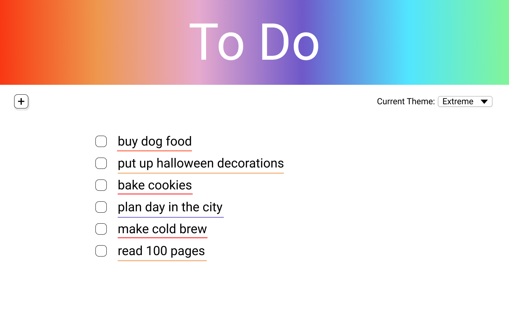
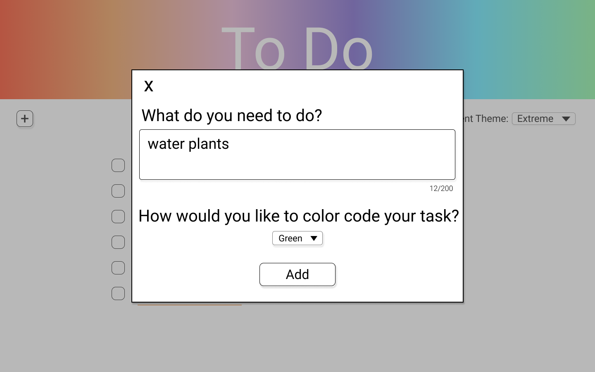

Goal
To create a simple To Do Application that allows users to add items to a list, check and uncheck those items, and change the color scheme.
Tools
React, JavaScript, HTML, CSS, Figma
Features
To start learning React, I decided to go the classic route and make a To Do Application.
As this app is meant to be minimal, the main functionality centers around adding new tasks that can be checked and unchecked.
I decided that being able to color code and change themes would be a nice addition, especially considering similar functionalities are common in organizational apps.
When deciding on color schemes, I used my browser's developer tools to make sure that colors (within each theme) were distinct enough for users who might need/prefer more contrast or be colorblind. I also added the line theme for accessibility in case the contrasting colors were not enough. And finally, I considered error handling by highlighting the textbox in red if a user tries to add an empty task.
When deciding on color schemes, I used my browser's developer tools to make sure that colors (within each theme) were distinct enough for users who might need/prefer more contrast or be colorblind. I also added the line theme for accessibility in case the contrasting colors were not enough. And finally, I considered error handling by highlighting the textbox in red if a user tries to add an empty task.
Process
- Create a clickable, high-fidelity prototype using Figma.
- Set up the React Application.
- Add the basic functionality i.e. allowing users to add items to their list and then check and uncheck them.
- Testing the core features worked and the styling was as expected.
- Add the ability to modify the color scheme.
- Additional testing considering edge cases and ways the app could be broken.
- Add error handling feature that alerts users if they try to enter an empty task (result of testing).
The following are some example screens from the prototype:


Final Product
The code as well as instructions on how to download and use the app can be found on Github.
You can also view the demo video below.